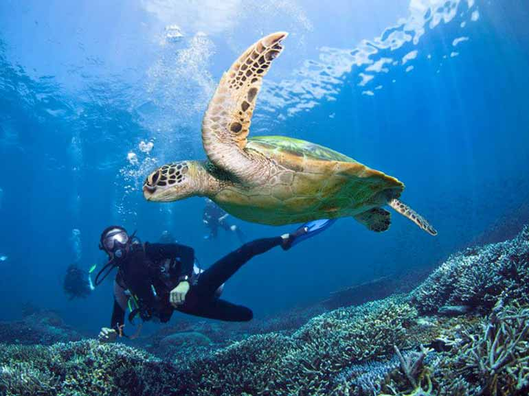
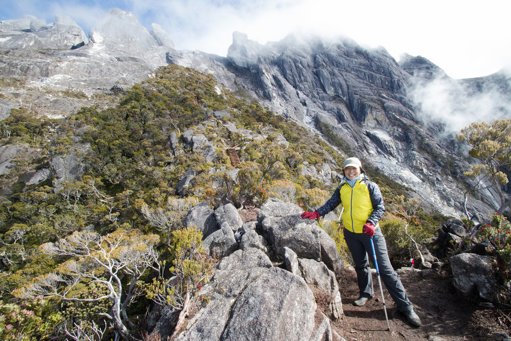

Local Guides
Connect with verified experts.
Your companion for responsible travel and unforgettable experiences.
Explore DestinationsConnect with verified experts.
Leave zero footprint behind.
Discover our top-rated sustainable journeys.

Immerse yourself in ancient jungles with our expert local biologists.

Explore vibrant, protected marine life with certified eco-divers.

Hike breathtaking, high-altitude trails while leaving zero trace.
"The most authentic and respectful travel experience I have ever had. The guides were incredible and the focus on conservation is inspiring." - Sarah Jenkins